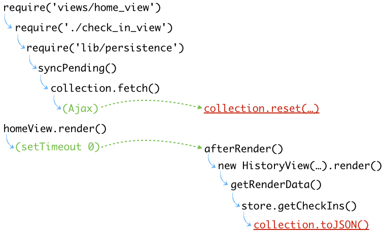

On accède par get et set aux attributs
Gère les dirties (attributs modifiés), le isNew(), et un minimum de validation (mais plein de plugins), et toJSON()
Des plugins pour les relations entre modèles, etc.
Événements change et change:attribute, invalid, request, error, sync et destroy.
Pré-intègre plusieurs méthodes cool d’Underscore : pairs(), pick(), omit(), keys(), values() et invert().
module.exports = Backbone.Model.extend({
// …
});
Liste de modèles, souvent de même type indiqué par model.
Clé primaire par défaut des modèles : id.
Ordre naturel personnalisable.
Événements add, remove, sort et reset. Ceux des modèles remontent sur la collection aussi (bubbling).
Pré-intègre plein de méthodes cool d’Underscore, dont each, map, find/filter/findWhere/where, all, any, invoke, pluck…
module.exports = Backbone.Collection.extend({
model: require('./check_in')
});
On va se créer une collection de check-ins, et y ajouter nos objets soigneusement définis.
var CheckInsCollection = require('models/collection');
var collection = new CheckInsCollection();
function addCheckIn(checkIn) {
checkIn.key = checkIn.key || Date.now();
collection.add(checkIn);
}
exports.addCheckIn = addCheckIn;
var store = require('lib/persistence');
// …
checkIn: function(e) {
// …
store.addCheckIn({ … });
},
Le couple gagnant du Web des APIs, et celui que Backbone prend en charge par défaut.
| Méthode | URL | Action |
|---|---|---|
GET |
/checkins |
List |
POST |
/checkins |
Create |
GET |
/checkins/<key> |
Read |
PUT/PATCH |
/checkins/<key> |
Update |
DELETE |
/checkins/<key> |
Destroy |
model: require('./check_in'),
url: '/checkins'
function addCheckIn(checkIn) {
collection.create(checkIn); // add + save
}
On décline une nouvelle vue imbriquée sur la droite, comme on l’avait fait pour la zone de check-in sur la gauche.
Souci potentiel de race condition asynchrone :
On va découpler tout ça proprement avec Backbone.Mediator.
On va ainsi utiliser des événements applicatifs pour notifier du reset de la collection.
Qui veut écoute… dont la fenêtre d’historique. Si elle render avant la fin du fetch, elle pourra le refaire au bon moment.
collection.on('reset', function() {
Backbone.Mediator.publish('checkins:reset');
});
subscriptions: {
'checkins:reset': 'render'
},
Quand on ajoute, ce serait bien de le voir tout de suite à droite !
Même approche : événement applicatif d‘ajout.
collection.on('add', function(model) {
Backbone.Mediator.publish('checkins:new', model.toJSON());
});
subscriptions: {
'checkins:new': 'render',
// …
},
La collection, par défaut, liste les modèles par ordre d’ajout. Pas cohérent avec le tri serveur, qui a les plus récents d’abord.
Pour garantir l’ordre, il faut implémenter un ordre naturel, afin que la collection soit toujours bien ordonnée.
comparator: function(c1, c2) {
return +c2.get('key') - +c1.get('key');
}
Une fois ceci calé, on modifiera quand même notre réaction à checkins:new pour une UX plus remarquable.
HTML5 prévoit deux parties, hélas peu cohérentes :
navigator.onLine (notez cette !@# de L majuscule)
Événements online et offline sur window
if ('onLine' in navigator) {
exports.isOnline = function isOnline() { return navigator.onLine; };
$(window).on('online offline', checkStatus);
checkStatus();
}
function checkStatus() {
Backbone.Mediator.publish(exports.isOnline() ? 'connectivity:online' :
'connectivity:offline');
}
On s’inscrit aux événements applicatifs pour refléter ça sur le picto d’en-tête (HomeView, #onlineMarker)
On est hors-ligne ? On évite de se tirer dans le pied :
Inutile de recharger la géoloc / les POIs / de l’Ajax
initialize: function() {
// …
checkFetchable();
// …
Backbone.Mediator.subscribe('connectivity:online', checkFetchable);
Backbone.Mediator.subscribe('connectivity:offline', checkFetchable);
// …
function checkFetchable() {
that.set('fetchPlacesForbidden', !cnxSvc.isOnline());
}
}
if (!cnxSvc.isOnline()) {
return;
}
Une fois de retour online, il faut persister ce qui ne l’a pas été.
function accountForSync(model) {
pendings = _.without(pendings, model);
if (pendings.length) return;
collection.off('sync', accountForSync);
collection.fetch({ reset: true });
}
function syncPending() {
if (!cnxSvc.isOnline()) return;
collection.off('sync', accountForSync);
pendings = collection.filter(function(c) { return c.isNew(); });
if (pendings.length) {
collection.on('sync', accountForSync);
_.invoke(pendings, 'save');
} else
collection.fetch({ reset: true });
}
Cool, mais si on perd / rafraîchit la page avant de revenir online ?
Il nous faut un miroir local, persistant, de collection.
localStorage adapté, mais API trop basique ⇒ Lawnchair. En plus, on pourrait migrer sur IndexedDB sans toucher au code.
var localStore = new Lawnchair({ name: 'checkins' }, function() {});
// …
collection.on('reset', function() {
localStore.nuke(function() { localStore.batch(collection.toJSON()); });
Backbone.Mediator.publish('checkins:reset');
});
collection.on('add', function(model) {
localStore.save(model.toJSON());
Backbone.Mediator.publish('checkins:new', model.toJSON());
});
Avant même de charger par Ajax, on restaure depuis le miroir.
Ça permet une UI initiale utile, et de résister au rechargement ou à la fermeture de la page pendant l’offline.
function initialLoad() {
localStore.all(function(checkins) {
collection.reset(checkins);
syncPending();
});
}
// …
initialLoad(); // à la place de syncPending()
Il reste un cas où la collection bouge et le miroir local ne le voit pas : les événements sync (ex. fourniture de l'ID par le serveur en réponse à la création).
collection.on('sync', function(model) {
if (!(model instanceof collection.model)) {
return;
}
localStore.save(model.toJSON());
});
D’autres gens check-in ? On aimerait le voir tout de suite…
Socket.IO fournit un magnifique enrobage, protocolaire et fonctionnel, au-dessus des Web Sockets et de leurs fallbacks.
var io = require('socket.io');
var store = require('lib/persistence');
// …
var socket = io.connect();
socket.on('checkin', store.addCheckIn);
function addCheckIn(checkIn) {
if (collection.findWhere(_.pick(checkIn, 'key', 'userName'))) {
return;
}
checkIn.key = checkIn.key || Date.now();
collection['id' in checkIn ? 'add' : 'create'](checkIn);
}
Cliquer sur un élément de l’historique devrait aller sur une « URL de détail » pour ce check-in, qui ouvrirait à un dialogue modal.
module.exports = Backbone.Router.extend({
routes: {
'': 'home',
'check-in/:id': 'showCheckIn'
},
// …
showCheckIn: function(id) {
this.home(true);
console.log('SHOW CHECK-IN:', id);
}
});
Essayez localhost:3333/check-in/1…
events: {
'click li[data-id]': 'showCheckInDetails'
},
// …
showCheckInDetails: function showCheckInDetails(e) {
var id = this.$(e.currentTarget).attr('data-id');
if (!id) {
return;
}
Backbone.history.navigate('check-in/' + id, { trigger: true });
},
var CheckInDetailsView = View.extend({
className: 'modal fade',
id: 'checkInDetails',
// événement bootstrap
events: { 'hidden.bs.modal': 'wrapUp' },
template: require('./templates/check_in_details'),
wrapUp: function wrapUp() {
// …
}
}, { // Méthodes « statiques »
cancel: function(){}, // navigation vers '/'
display: function(){
// …
singleton.$el.modal('show');
}
});
Un check-in que l'on vient de rajouter n'a pas encore d'id car il est renvoyé par le serveur. On attend donc l'événement sync pour mettre à jour le DOM
collection.on('sync', function(model) {
// …
localStore.save(model.toJSON());
Backbone.Mediator.publish('checkins:saved', model);
});
subscriptions: {
// …
'checkins:saved': 'updateId'
},
// …
updateId: function updateId(checkIn) {
this.$('#history li:first-child').attr('data-id', checkIn.id);
}
Il faut mettre en correspondance un li de l’historique avec un id Backbone… Pour du pré-chargé, ça va (on a l'info), mais pour un check-in qu'on vient de faire côté client, au moment du add on n’a que son cid : il va falloir recaler ça au sync.
function modelWithCid(model) {
return _.extend(model.toJSON(), { cid: model.cid });
}
// …
collection.on('add', function(model) {
localStore.save(model.toJSON());
Backbone.Mediator.publish('checkins:new', modelWithCid(model));
});
collection.on('sync', function(model) {
// …
localStore.save(model.toJSON());
Backbone.Mediator.publish('checkins:saved', modelWithCid(model));
});
subscriptions: {
// …
'checkins:saved': 'updateId'
},
// …
updateId: function updateId(checkIn) {
this.$('li[data-cid="' + checkIn.cid + '"]').
attr('data-id', checkIn.id).removeAttr('data-cid');
}
Il ne nous reste plus qu’à détecter les clics sur les li équipés d’un data-id= pour déclencher la route approprié.
Si l’URL reçue référence un check-in trop ancien pour être déjà présent dans collection, il faudra le charger d’abord. Méthode garantie asynchrone, avec callback à la Node (erreur d’abord) :
exports.getCheckIn = function getCheckIn(id, cb) {
var checkIn = collection.get(id);
if (checkIn) return _.defer(cb, null, checkIn.toJSON());
checkIn = new collection.model({ id: id });
checkIn.urlRoot = collection.url;
checkIn.fetch({ success: setupCheckIn, error: reportError });
function setupCheckIn() {
collection.add(checkIn);
cb(null, checkIn.toJSON());
}
function reportError() { cb(0xDEAD); }
}
Avoir déjà utilisé la webapp devrait revenir à l’avoir installée.
On devrait pouvoir la démarrer même si on n’a plus accès au serveur (Ajax ne marchera pas, mais pas grave, miroir local).
Dans l’avenir, on aura ServiceWorker, mais pour le moment, on se débrouille avec Application Cache.
Exaspère les devs front car… ils n’ont pas lu la doc ! ;-)
Composant essentiel du offline first, néanmoins.
On détecte l’événement updateready de l’appcache, et on propose un rechargement immédiat à l’utilisateur (sinon, il aura la nouvelle version au prochain chargement manuel).
if (window.applicationCache) {
window.applicationCache.addEventListener('updateready', function() {
$('#reloadPrompt').modal({ show: true });
});
}
require('lib/appcache');